On × POST ARCHIVE FACTION · CURRENT FORM 5.0 · 언박싱
온 × 파프, 6시즌의 마지막 신발 클라우드소마 PAF 언박싱
굵은 글씨는 힘줘서 읽을 곳, / 는 잠깐 쉬는 곳이에요. 점선 칸은 실물을 보고 직접 채워 말할 부분이라 대본에 없는 내용을 지어내지 않도록 비워 뒀어요. 갈색 줄이 붙은 문단은 화면 전체를 참고사진으로 덮고 목소리만 나가는 구간이라, 카메라를 보지 않고 대본을 읽어도 돼요. 촬영할 때는 읽기 모드를 켜면 사진과 메모가 숨고 글자가 커져요.
강조해서 읽기직접 채워 말하기사진 풀화면 · 목소리만 / 연출
장면 1
오프닝 훅
0:00–0:25
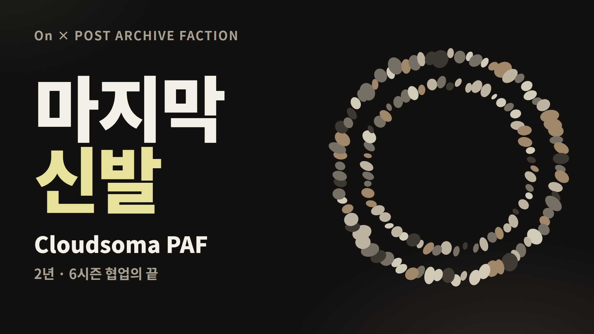
card-01-hook.png
박스를 카메라 앞에 들고 바로 첫 문장.
온러닝과 포스트 아카이브 팩션, 파프의 협업이 / 이 신발로 끝났습니다.
2년 동안 여섯 시즌. 그 마지막 신발, 클라우드소마 PAF예요.
그런데 이 마지막 신발이 / 시리즈에서 제일 싼 신발이에요. / 파프 신발을 3분의 1 가격에 신는 방법이기도 하고요.
대학생 입장에서 이게 왜 괜찮은 선택인지, / 지금부터 같이 열어볼게요.
편집 · 첫 2초 박스 클로즈업 → card-01 풀화면 1.5초 → 인물. "3분의 1 가격"에서 card-13을 0.8초 예고로 스치듯.
장면 2
인사 · 파프는 어떤 브랜드인가
풀화면 사진 구간0:25–1:05
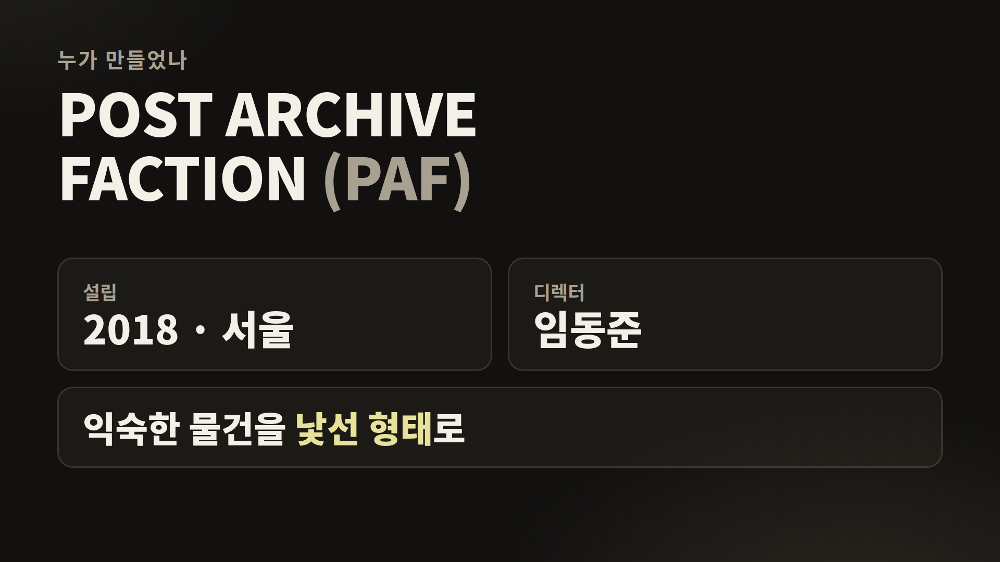
card-02-paf.png
안녕하세요, 채널명입니다.
패션에 관심 있는 대학생이라면 / 파프, 한 번쯤 들어보셨을 거예요.
포스트 아카이브 팩션은 2018년 서울에서 시작했고, / 디렉터는 임동준 디자이너예요.
익숙한 옷을 해체해서 / 낯선 형태로 다시 짜는 브랜드. / 비대칭, 비틀린 구조가 파프의 언어예요.
그런데 솔직히 / 학생 입장에선 쉽게 손이 가는 브랜드는 아니죠. 본인 경험 한 줄 · 예: 매장에서 가격표 보고 내려놨던 기억
이 얘긴 뒤에서 숫자로 보여드릴게요.
편집 · 인사는 인물. "패션에 관심 있는"부터 "파프의 언어예요"까지 card-02 풀화면 + 목소리만. 다시 인물로 돌아와 "솔직히"부터.
장면 3
온러닝은 어떤 브랜드인가
풀화면 사진 구간1:05–1:45
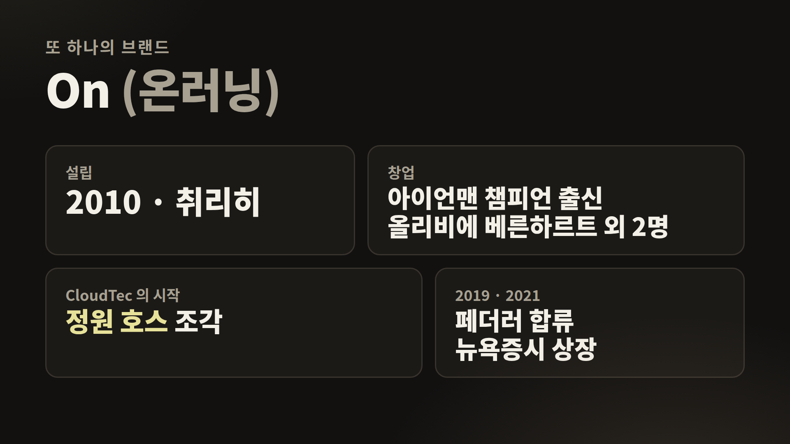
card-12-on.png
협업 상대인 온도 짧게 볼게요.
온은 2010년 스위스 취리히에서 시작한 러닝 브랜드예요. / 창업자 중 한 명이 아이언맨 챔피언 출신 올리비에 베른하르트고요.
바닥의 구멍 뚫린 쿠션, 클라우드텍은 / 정원 호스를 잘라 신발 밑에 붙여본 실험에서 시작됐대요.
2019년엔 로저 페더러가 주주로 합류했고, / 2021년엔 뉴욕증시에 상장했어요.
요즘 러닝 인기 덕분에 / 캠퍼스에서도 온 신발 신은 사람 정말 자주 보이죠.
기능이 먼저인 러닝 브랜드와 / 형태가 먼저인 패션 브랜드가 / 2년 동안 같이 신발을 만든 거예요.
편집 · "온은 2010년"부터 "뉴욕증시에 상장했어요"까지 card-12 풀화면 + 목소리만. 온 신발을 갖고 있으면 "캠퍼스에서도"에서 B롤 1초.
장면 4
협업 연혁 · 커런트 폼
풀화면 사진 구간1:45–2:35
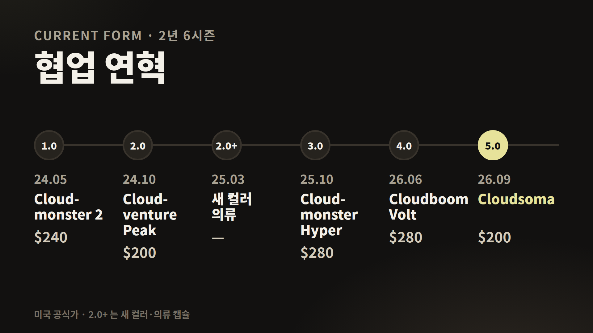
card-03-timeline.png
협업 이름은 커런트 폼, 지금의 형태라는 뜻이에요. / 임동준 디자이너가 취리히 리마트 강에서 튜브 타고 떠내려가던 기억에서 나온 이름이래요.
시작은 2024년 5월 클라우드몬스터 2. / 여기서 처음 나온 비대칭 끈이 끝까지 이어져요.
그 뒤로 트레일화 클라우드벤처 피크, / 클라우드몬스터 하이퍼, / 올해 6월엔 레이싱화 클라우드붐 볼트까지.
임동준 디자이너는 협업 목표를 이렇게 말했어요. / "그냥 예쁜 신발을 만들고 싶었다." / 그리고 "사람들이 신발에서 움직임을 느꼈으면 좋겠다"고요.
그리고 올해 1월 파리 패션위크에서 처음 공개된 클라우드소마가 / 9월 3일 발매되면서 / 여섯 시즌이 끝났습니다.
편집 · 장면 전체를 card-03 풀화면 + 목소리만. 말하는 시즌마다 해당 칸만 밝게. 이전 PAF 모델이 있다면 마지막 문장에서 나란히 놓은 실물 컷.
장면 5
언박싱 · 박스
2:35–3:25
말없이 박스 여는 소리 5초. 탑뷰 카메라 권장.
자, 열어볼게요.
박스 겉면: 로고 위치, 색, 재질을 보이는 대로 한두 문장
뚜껑을 열었을 때 첫 장면: 속지, 안내 카드, 여분 끈 등 실제로 들어 있는 것만
이런 협업 박스는 / 신발만큼 박스도 같이 보관하게 되더라고요. 마지막 모델이면 더 그렇고요.
편집 · 실물 컷만. 박스 로고 클로즈업 → 뚜껑 여는 손 → 속지 넘기는 손 → 신발 첫 등장(0.5배속). 구성품은 실제로 들어 있는 것만 말하기.
장면 6
첫인상 · 컬러
3:25–3:55
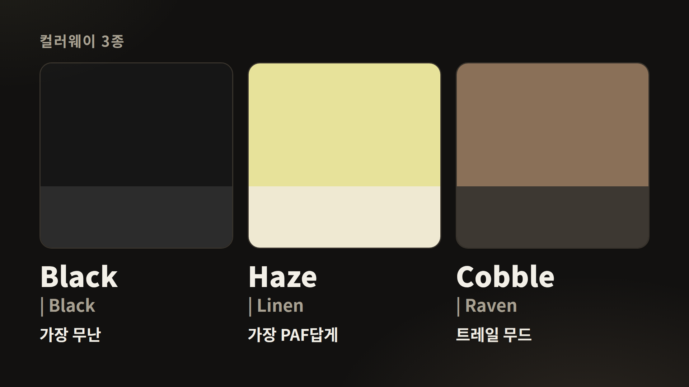
card-06-colors.png
컬러는 세 가지예요. 올블랙, / 옅은 노랑 헤이즈, / 흙빛 브라운 코블.
제가 고른 건 구매한 색이에요. 이 색을 고른 이유 한 문장
처음 들었을 때 느낌은 무게감·소재 첫인상.
고민 중이라면, 흙길까지 신을 거면 블랙이나 코블, / 파프다운 느낌이 제일 강한 건 헤이즈라고 생각해요.
편집 · "세 가지예요"에서 card-06을 얼굴 옆 칸에. 신발을 천천히 360도 돌리는 컷.
장면 7
가까이 보기 · 디테일
3:55–4:30
신발을 렌즈 가까이. 초점이 따라오게 천천히 움직이기.
가까이 볼게요.
앞코 → 어퍼 소재의 결 → 옆면 선 → 뒤꿈치 → 끈 순서로, 보이는 대로 한마디씩
이런 디테일은 사진으로는 잘 안 보여서 / 꼭 실물로 보셨으면 해요.
편집 · 신발을 카메라 가까이 가져오는 장면. 매크로·클로즈업 컷 5개를 3~4초씩 이어 붙이고 멘트는 짧게. 배경음 살짝 올리기. 사진 카드 없음.
장면 8
디자인 · 바위에서 온 신발
풀화면 사진 구간4:30–5:25
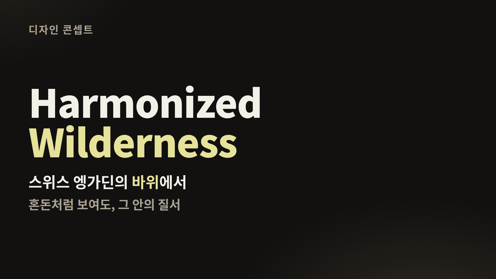
card-04-concept.png
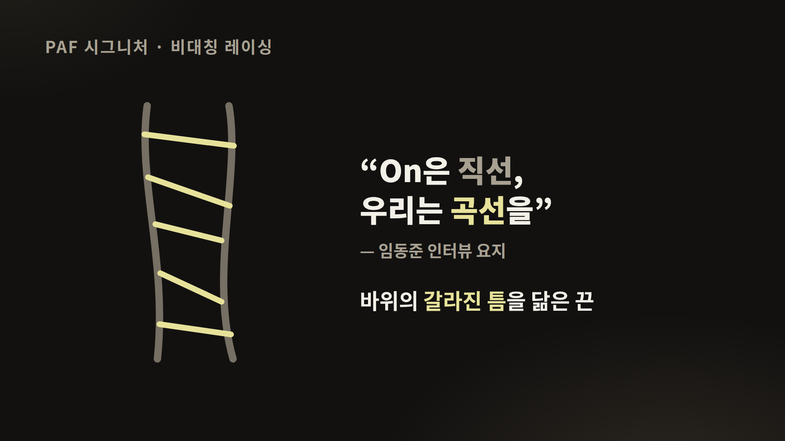
card-08-lacing.png
콘셉트는 하모나이즈드 와일더니스. / 임동준 디자이너가 스위스 엥가딘에서 본 바위 지형에서 시작했대요.
멀리서 보면 제멋대로 부서진 돌인데, / 가까이 보면 결이 있잖아요. 혼돈 속의 질서.
그래서 어퍼의 선들이 발을 감싸면서 흘러가고, / 끈은 파프 시그니처대로 한쪽으로 비껴서 지나가요. / 해외 리뷰에서는 바위의 갈라진 틈을 닮았다고 하고요.
실제로 보면 바닥과 쿠셔닝은 온 그대로고, / 눈에 보이는 선과 끈, 색에서 파프가 확 드러나요. 온다운 부분과 파프다운 부분을 하나씩 손으로 짚기
임동준 디자이너는 / 온의 디자인이 직선 같아서, 거기에 곡선을 얹고 싶었대요. / 온은 좋은 접시고, 파프 디자인은 그 위에 올린 요리라고요.
편집 · 앞 두 문단은 card-04 풀화면 + 목소리만 → 셋째 문단은 실물(손가락으로 선 따라가기, 레이싱 탑뷰) → 마지막 문단은 card-08 풀화면 + 목소리만.
장면 9
기술 · 바닥과 쿠셔닝
풀화면 사진 구간5:25–6:00
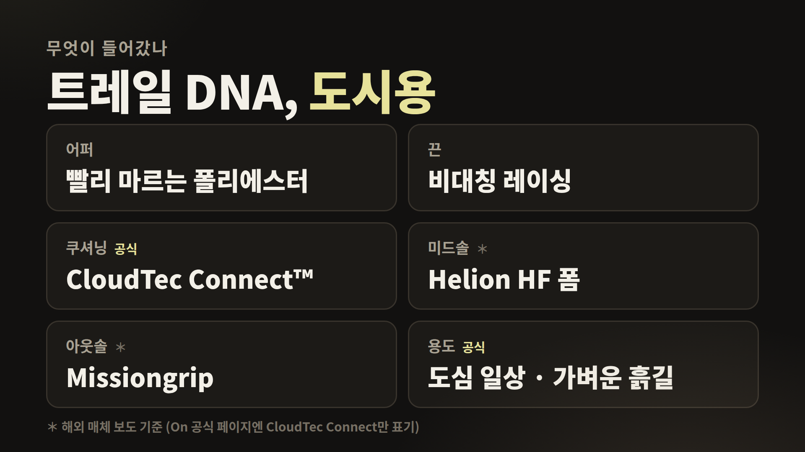
card-05-tech.png
쿠셔닝은 온 공식 설명대로 클라우드텍 커넥트. / 쿠션 조각이 따로 반응해서 울퉁불퉁한 길에서도 발을 따라가요.
해외 매체 보도로는 / 미드솔에 클라우드몬스터 3와 같은 헬리온 HF 폼, / 바닥엔 미션그립이 들어갔대요.
앞코를 잡고 휘어봤을 때 느낌, 바닥 무늬를 직접 보고 한 문장
편집 · 앞 두 문단 card-05 풀화면 + 목소리만 → 아웃솔 클로즈업, 휘어보기 실물 컷. 헬리온·미션그립은 On 공식 표기가 아니라 해외 매체 보도라서 "보도로는"이라고 둠.
장면 10
착화 · 러닝도, 패션도
풀화면 사진 구간6:00–6:45
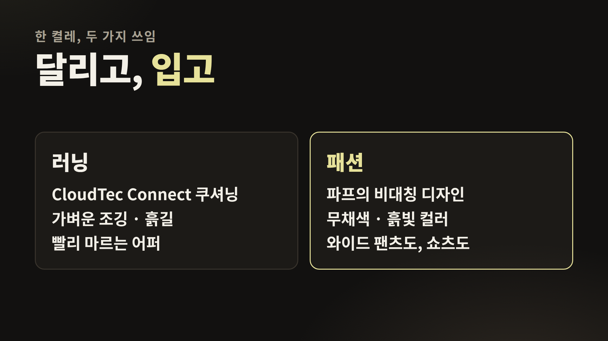
card-14-run-style.png
신어볼게요. 공식 안내는 정사이즈. / 저는 평소 평소 사이즈 신고, 이번엔 구매 사이즈로 샀어요.
발볼·발등, 몇 걸음 걸어본 쿠션 느낌
제가 이 신발에서 제일 좋은 점은 / 한 켤레로 두 가지가 된다는 거예요.
온 쿠셔닝이라 / 가벼운 조깅 정도는 충분히 할 수 있고, / 어퍼가 빨리 마르는 소재라 땀이나 비에도 부담이 덜해요.
그러면서 파프 디자인이라 / 수업 갈 때 코디로 신어도 멋이 나요. 러닝화인데 러닝화처럼 안 보이는 거죠.
러닝을 취미로 시작해보고 싶은데 / 운동화를 따로 사긴 부담인 분들한테 특히 괜찮아요. 코디 예시 한 줄 · 예: 와이드 팬츠, 러닝 쇼츠
편집 · 착화는 실물(끈 묶는 손 → 전신 → 걷는 슬로모션). "제일 좋은 점은"부터 둘째 VO 문단까지 card-14 풀화면 + 목소리만. 마지막 문단은 다시 인물 + 코디 전신 컷.
장면 11
좋은 점 · 아쉬운 점
6:45–7:15
며칠 신어본 느낌을 정리하면, / 좋았던 점은 좋은 점 1~2.
아쉬운 점은 아쉬운 점 · 예: 사이즈 구하기, 밝은 색 관리.
편집 · 인물 + 실물. 좋은 점은 화면 오른쪽, 아쉬운 점은 왼쪽에 짧은 텍스트 자막(4~6자).
장면 12
가격 · 대학생 입장에서
풀화면 사진 구간7:15–7:45
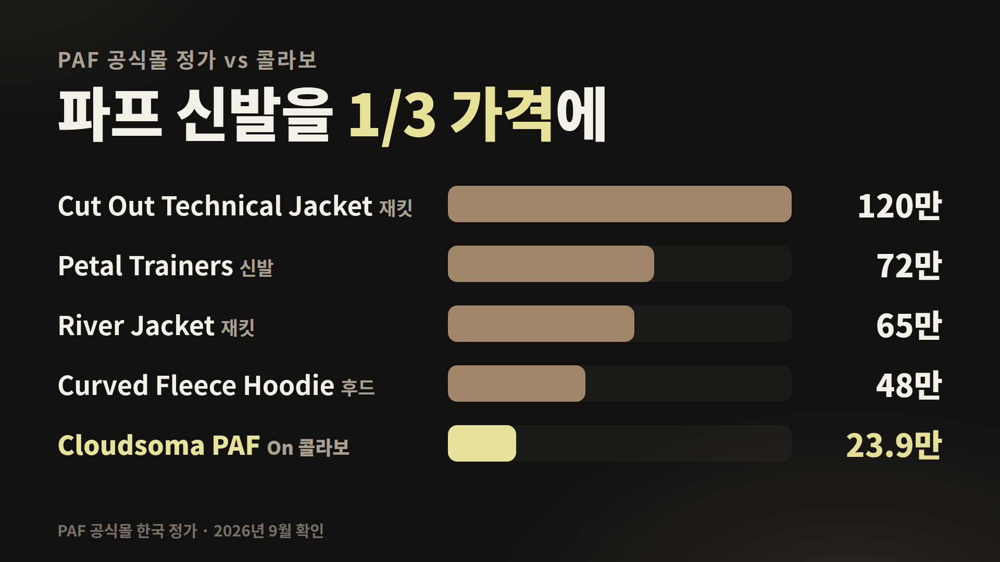
card-13-student-price.png
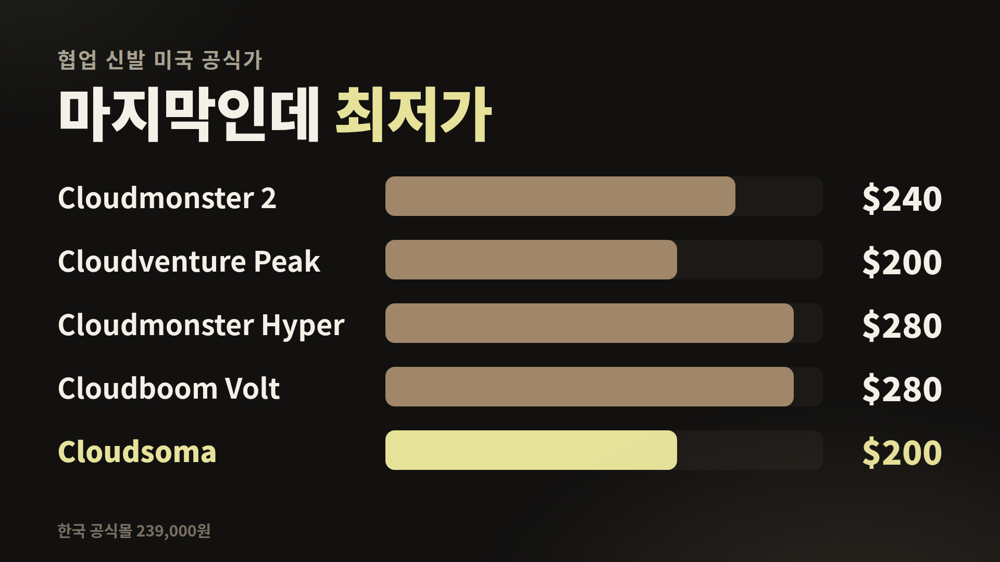
card-07-price.png
이제 아까 말한 숫자. / 파프 공식몰 기준으로 파프 신발은 72만 원, / 재킷은 65만 원부터 비싼 건 100만 원이 훌쩍 넘어요.
클라우드소마 PAF는 23만 9천 원. / 파프 신발의 3분의 1이에요.
협업 시리즈 안에서도 / 하이퍼나 볼트보다 80달러 싸고, / 클라우드벤처 피크와 같은 최저가고요.
대학생이 파프 디자인을 처음 경험하기엔 / 제일 현실적인 가격이라고 생각해요. / 한정판이라 사이즈는 빨리 빠지니까 참고하세요.
편집 · 첫 두 문단 card-13 풀화면 + 목소리만(막대가 위에서부터 차례로), 셋째 문단 card-07 풀화면 + 목소리만, 마지막 문단은 인물.
장면 13
돌로 된 원 · 마무리
풀화면 사진 구간7:45–8:15
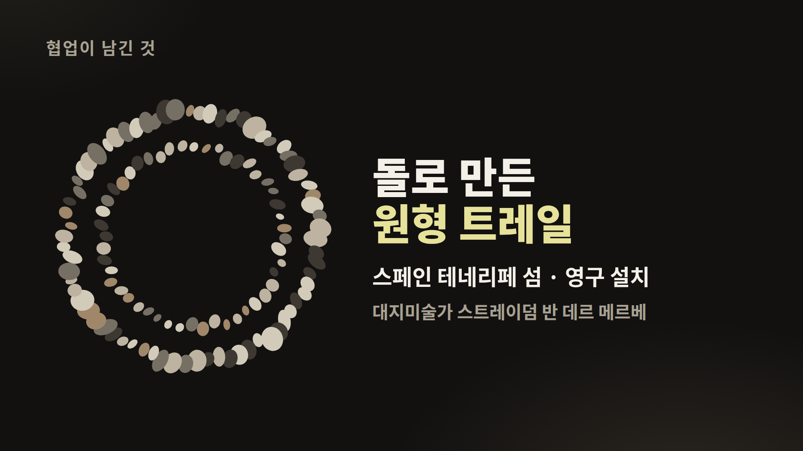
card-09-monument.png
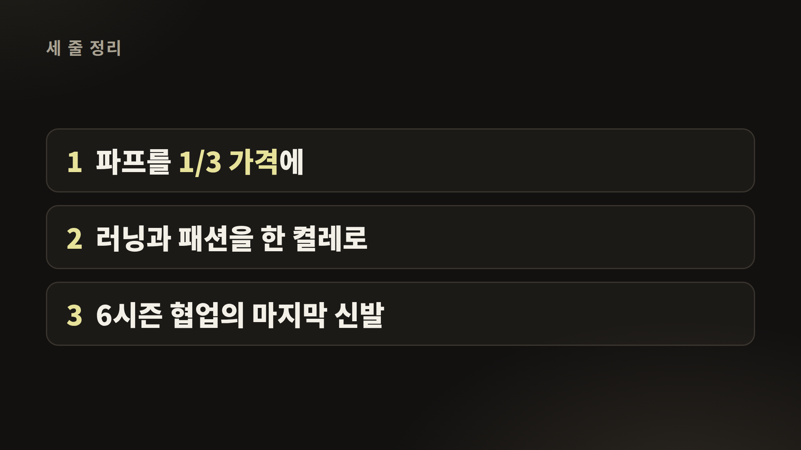
card-11-summary.png
이번 협업은 신발 말고도 / 스페인 테네리페 섬에 원형 돌 트레일을 영구적으로 남겼어요. / 여섯 시즌을 말 그대로 원으로 닫은 거죠.
돌을 하나씩 쌓아 올리는 과정은 온이 다큐멘터리로도 공개했어요. 설명란에 링크 걸어둘게요.
정리하면, 하나, 파프를 3분의 1 가격에. / 둘, 러닝과 패션을 한 켤레로. / 셋, 6시즌 협업의 마지막 신발.
한 줄 총평: 살 만한지, 누구에게 추천하는지
여러분은 온 파프 중에 어떤 게 제일 좋았는지 / 댓글로 알려주세요. 구독과 좋아요도 부탁드려요.
편집 · 첫 문단 card-09 풀화면 + 목소리만 → "정리하면"에서 card-11을 얼굴 옆 칸에 → 마지막 3초 박스 위 신발 정물 컷, 엔드스크린.
찍어야 할 컷
대본의 점선 칸과 편집 메모에 나오는 실물 컷이에요. 한 번에 모두 찍어 두면 편집할 때 모자라지 않아요.
컷
찍는 법
쓰는 장면
박스 전면 · 측면 로고
탑뷰와 45도 두 가지, 3초씩
1, 5
박스 여는 손
탑뷰 고정, 말없이 소리만 5초
5 · 쇼츠 C
속지 · 구성품
하나씩 들어서 카메라 쪽으로
5
신발 첫 등장
박스에서 천천히 꺼내기, 나중에 0.5배속
5
360도 회전
턴테이블이나 손으로 천천히 한 바퀴
6
외측 · 내측 측면
신발 높이에 카메라, 흰 벽이나 돌 배경
6, 8
어퍼의 선 따라가기
손가락으로 오버레이 선을 천천히 짚기
8
레이싱 탑뷰
위에서 수직으로, 끈 전체가 한 화면에
8 · 쇼츠 B
디테일 클로즈업 5컷
앞코 · 어퍼 소재 결 · 옆면 선 · 뒤꿈치 · 끈. 렌즈 가까이, 초점 따라 천천히 (가능하면 4K 또는 매크로)
7
아웃솔 클로즈업
바닥을 카메라 쪽으로, 러그가 보이게 옆 조명
9
휘어보기
앞코를 잡고 천천히 두 번 구부리기
9
끈 묶기 · 착화 · 코디 전신
손 클로즈업 → 전신, 코디 두 가지(운동복 · 수업룩)면 더 좋음
10
걷는 · 뛰는 슬로모션
발목 높이, 아스팔트와 흙길 각각 1컷, 가볍게 뛰는 컷 1개
10
이전 PAF 모델과 나란히
갖고 있다면 옆에 두고 탑뷰
4
마지막 정물
박스 위에 신발, 3초 고정
13
촬영 팁
조명은 창가 자연광 + 반대편 반사판. 헤이즈(옅은 노랑)는 노출을 조금 낮춰야 색이 날아가지 않아요.
배경은 돌, 콘크리트, 모래색 천처럼 신발 콘셉트(바위)와 맞는 무채색.
얼굴이 나오는 말하는 컷은 1080p 60fps, 실물 클로즈업은 4K로 찍어 두면 편집 때 확대해도 선명해요.
말하는 컷에서는 신발을 가슴 높이에 들면 사진 카드를 얼굴 양옆에 넣을 자리가 남아요.
갈색 줄이 붙은 "사진 풀화면 · 목소리만" 문단은 화면이 사진으로 덮이니, 대본을 보고 읽어도 되고 조용한 곳에서 목소리만 따로 녹음해도 돼요. 따로 녹음할 땐 말하는 컷과 같은 마이크로.
쇼츠 A
파프 신발을 3분의 1 가격에?
약 30초
card-13-student-price.pngcard-14-run-style.png
대학생이 파프 신는 가장 현실적인 방법.
파프 신발은 공식몰에서 72만 원이에요. / 근데 온러닝이랑 만든 이 신발은 23만 9천 원, / 3분의 1이에요.
온 쿠셔닝이라 가벼운 조깅도 되고, / 파프 디자인이라 코디로도 멋이 나요.
온 × 파프 마지막 콜라보, 클라우드소마. 전체 언박싱은 채널에서.
편집 · 9:16. 첫 1초 자막 "대학생이 파프 신는 법". 가격 문단은 card-13 풀화면(세로 화면 가운데), "72만 → 23.9만" 숫자를 크게. 끝에 박스 여는 0.5초 컷.
쇼츠 B
끈이 왜 삐뚤어요?
약 30초
card-08-lacing.png
이 신발, 끈이 삐뚤게 달려 있죠?
불량 아니고요, / 한국 브랜드 파프의 시그니처 비대칭 레이싱이에요.
이번 모델은 스위스 산의 바위 균열에서 따왔대요.
디자이너 말로는 / 온은 직선이라서, 거기에 곡선을 얹고 싶었다고. 온 × 파프, 클라우드소마였습니다.
편집 · 9:16. 첫 컷은 레이싱 탑뷰 클로즈업 + 자막 "끈이 왜 삐뚤어요?". "바위 균열"에서 card-08.
쇼츠 C
무음 언박싱
약 25초
말없이 소리만. 화면 자막으로만 전달.
자막 1 온 × 파프 · 마지막 신발
자막 2 6시즌의 끝
자막 3 Cloudsoma PAF · 구매한 색
자막 4 전체 리뷰는 채널에서
편집 · 9:16. 박스 로고 → 뚜껑 → 속지 → 신발 꺼내기 → 360도 → 착화 한 걸음. 컷마다 3~4초, 박스 소리 살리기, 배경음은 작게.
설명 구간은 사진 풀화면 + 목소리만
브랜드 소개, 연혁, 콘셉트, 기술, 가격처럼 정보를 전하는 문단은 인물을 빼고 화면 전체를 참고사진(카드)으로 덮은 채 목소리만 들려줘요. 대본에서 갈색 줄이 붙은 문단이 그 구간이에요.
사진은 0.3초 페이드로 들어오고 나가요. 한 사진을 4초 넘게 쓸 땐 아주 천천히 확대(105%까지)해서 멈춰 보이지 않게.
자막은 사진 위에도 그대로 둬요. 숫자는 노랑(강조) 그대로.
풀화면이 3장면 넘게 이어지지 않도록, 사이사이에 실물 컷이나 인물 컷을 1~2초 끼워 리듬을 살려요.
편집 도구(compose.py)에서는 사진 등장 문구 설정에 "full"을 붙이면 풀화면으로 들어가요.
장면별 사진 순서
장면
시간
사진
1 오프닝
0:00–0:25
card-01 풀화면 1.5초 (+ card-13 예고)
2 파프
0:25–1:05
card-02 풀화면 · 목소리만
3 온러닝
1:05–1:45
card-12 풀화면 · 목소리만
4 연혁
1:45–2:35
card-03 풀화면 · 목소리만
5 박스
2:35–3:25
실물 컷만
6 컬러
3:25–3:55
card-06 얼굴 옆 칸
7 클로즈업
3:55–4:30
실물 매크로 컷만
8 디자인
4:30–5:25
card-04 풀화면 → 실물 → card-08 풀화면
9 기술
5:25–6:00
card-05 풀화면 → 실물
10 착화
6:00–6:45
실물 → card-14 풀화면 → 코디 전신
11 장단점
6:45–7:15
인물 + 짧은 텍스트 자막
12 가격
7:15–7:45
card-13 풀화면 → card-07 풀화면
13 마무리
7:45–8:15
card-09 풀화면 → card-11 얼굴 옆 칸
카드는 1920×1080이고 글자를 크게 만들어서, 얼굴 옆 칸에 작게 넣어도 전체 화면으로 써도 읽혀요. 원본 파일은 youtube/cloudsoma/img/ 에 있고, 문구를 고칠 땐 cards/cards.html 을 수정해 다시 뽑으면 돼요.
대본에 쓴 사실과 출처
발매 2026년 9월 3일, 미국 $200, 컬러 Black | Black · Haze | Linen · Cobble | Raven, 정사이즈, 한정판, 베트남 생산, CloudTec Connect™ — On 공식 제품 페이지
온러닝: 2010년 1월 취리히, 올리비에 베른하르트(스위스 아이언맨 챔피언 출신)·데이비드 알레만·카스파 코페티 공동 창업, 정원 호스 실험에서 시작한 CloudTec, 2019년 페더러 주주 합류, 2021년 9월 뉴욕증시 상장(ONON) — 위키백과 On (company), BoF
파프 본 라인 정가: Petal Trainers 720,000원, River Jacket 650,000원, Cut Out Technical Jacket 1,200,000원, Rider Jacket 1,800,000원, Curved Fleece Hoodie 480,000원 — PAF 공식몰 (2026년 9월 확인, 원화 표시)
이전 모델 미국가: Cloudmonster 2 PAF $240, Cloudventure Peak PAF $200, Cloudmonster Hyper PAF $280, Cloudboom Volt PAF $280 — 각 모델 공식·리테일 페이지 기준
촬영 전 확인
한국 공식가 239,000원은 촬영 직전에 공식몰에서 한 번 더 확인하세요. 일부 해외 매체는 $325로 적었지만 On 공식가는 $200이에요.
박스 구성품(여분 끈, 카드 등)은 대본에 넣지 않았어요. 실제로 들어 있는 것만 말하세요.
무게, 드롭, 스택 높이는 공식 수치가 없어서 쓰지 않았어요. 체감으로만 말하세요.
이 신발은 On이 "트레일에서 영감 받은 도시용"으로 소개해요. 본격 산악 트레일화처럼 말하지 않도록 주의.
파프 본 라인 가격은 시즌마다 바뀌어요. 촬영 직전에 공식몰에서 신발 가격을 한 번 더 확인하고, 달라졌으면 대본의 "72만 원"과 card-13을 고쳐 주세요.
"캠퍼스에서 자주 보인다", "가벼운 조깅 정도" 같은 말은 개인 경험으로 말하는 부분이에요. 본격 러닝 성능을 보장하는 표현은 피했어요.
이전 모델 가격은 미국 발매가 기준이에요. 원화로 비교할 땐 모델마다 국내 발매가가 달라서 섞지 않는 게 안전해요.
설명란에 넣을 링크
On × PAF 컬렉션 페이지 (기념비 제작 다큐 포함): https://www.on.com/ko-kr/collection/on-x-post-archive-faction — 대본 11장면에서 "설명란 링크"로 안내해요.